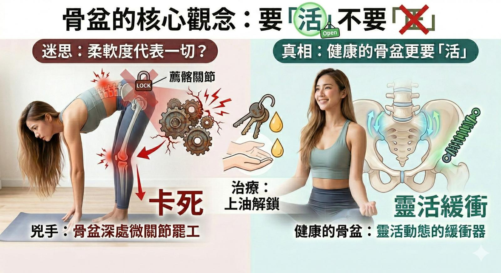

「感覺有東西鑽進骨頭裡」、「好像兩塊骨頭在互相摩擦」......
【「感覺有東西鑽進骨頭裡」、「好像兩塊骨頭在互相摩擦」......】
接續年前聊到的『薦髂關節』，開工後診間便來了一位長年練習瑜伽、柔軟度與核心極佳的患者。照理說，她的身體狀態很好，但腰臀深處卻總有股解不開的痛。
只要往前彎腰，就痛到挺不直；走久了，連同一側的膝蓋內側都跟著產生甩不掉的壓迫感。怎麼按、怎麼拉筋都放鬆不了。找了很多醫療求助，但遲遲無法得到有效改善。
這其實是個經典的「代償」反應。經過觸診，真相大白：兇手不是肌肉緊繃，而是她的「骨盆忘記怎麼動了」。
-
⚙️ 柔軟度再好，也怕微小關節「卡死」
我們常說，健康的骨盆不是只要「正」，更要「活」。
骨盆中間的「薦髂關節」，是承接上下半身力量的大齒輪。我們走路、彎腰時，它必須有極微小且滑順的「點頭與滑動」。
這位患者的薦髂關節就像生鏽卡死的齒輪。硬碰硬的結果，就產生了「骨頭摩擦感」與鑽骨痛。因為這個大避震器罷工，衝擊力只好往下丟給膝蓋承受，往上則卡住腰椎，讓她彎腰後挺不直。痛點看似到處跑，其實源頭都一樣。
-
✨ 解開封印：找回骨盆的「滑動」
治療邏輯很清晰：不需要死命拉筋，而是要解開卡住的微關節。
透過徒手技巧，針對骨盆輕柔引導，使薦椎與髂骨找回原本的滑動軌跡；並搭配乾針治療，釋放周圍因長期代償而死鎖的深層肌筋膜。過程中沒有暴力的喀喀聲，只有順勢的微調。
治療後她試著起身，不僅感受到輕巧，更驚訝地說後背正透出一種「溫暖的熱感」——那是血液重新流動、張力釋放的證明。
她很興奮地說：「原來正常的樣子是這樣，真的好久沒有感覺到這種舒適感了。」
-
👨⚕️ 醫師的小叮嚀
人體結構很微妙，即使是規律運動的人，也會遇到深層關節「忘記怎麼動」的盲區。
如果你也有那種「很深、揉不到、像骨頭摩擦」的腰臀痛，甚至合併同側膝蓋不適，先別灰心。也許你的骨盆不是歪了，只是需要重新「上油解鎖」。找對源頭，身體自然會用舒適來回報你。
太初中醫診所
東門中醫
中醫師 黃彥鈞
#骨盆活動失能 #薦髂關節 #下背痛 #膝蓋痛 #中醫徒手 #乾針治療 #肌筋膜 #中醫針傷 #身體覺察
